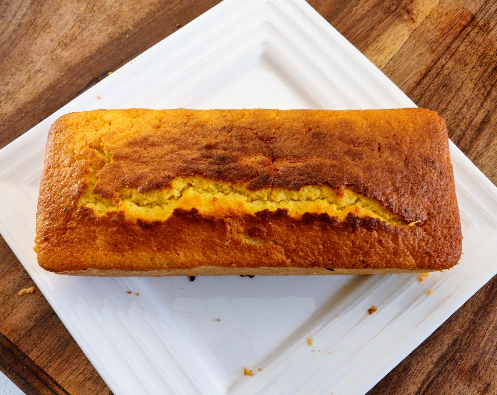

Cake au citron

Photo par [olasd@](https://twitter.com/olasd)
Pour un cake (environ 8 parts) :
- 200g de farine
- 150g de sucre
- Un demi-sachet de levure
- 4 œufs
- 100g de beurre
- Un beau citron non traité
- (Facultatif) Une belle poignée de citrons confits
- Faire fondre le beurre. Laver le citron, et si on a pas de citrons confits, récupérer son zeste. Si on a des citrons confits, les couper en petits bouts. Presser le citron pour récupérer le jus.
- Faire préchauffer le four à 180°C. Mélanger farine, sucre, levure, ajouter les œufs un par un, puis le beurre fondu, et les morceaux et jus de citron.
- Beurrer un moule à cake, verser le mélange dedans, faire cuire environ 40 minutes (jusqu'à ce qu'un couteau planté dedans ressorte sec).
Retour à la liste des recettes